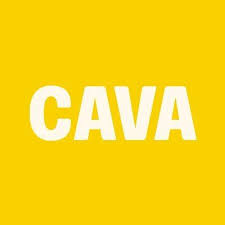

CAVA
Healthy • cost effective • perfect for a quick lunch between classes • 10:30am–10:30pm
Location: 3352 W Friendly Ave Ste 115, Greensboro, NC 27410

Garlicky Chicken Shawarma Bowl
Chicken shawarma, red pepper hummus, Crazy Feta®, corn, onions, broccoli, rice, skhug, garlic dressing.

Greek Chicken Pita
Grilled chicken, hummus, tzatziki, pickles, tomato + onion, olives, feta, romaine, Greek vinaigrette.

Cucumber Mint Lime Refresher
A cure to any midday slump. Sweet and refreshing, balanced out with fresh lime juice.